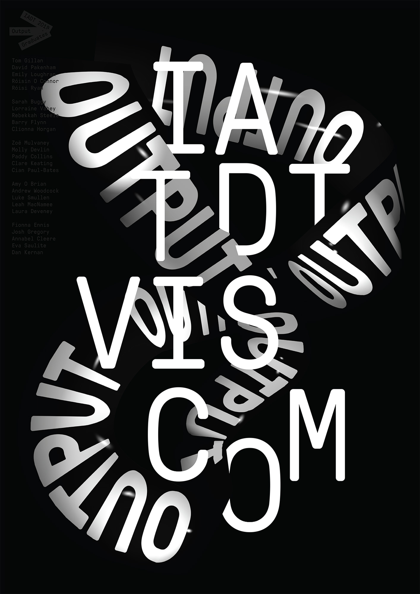
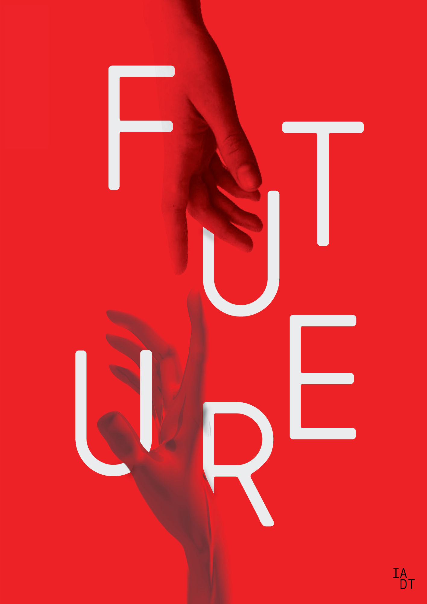
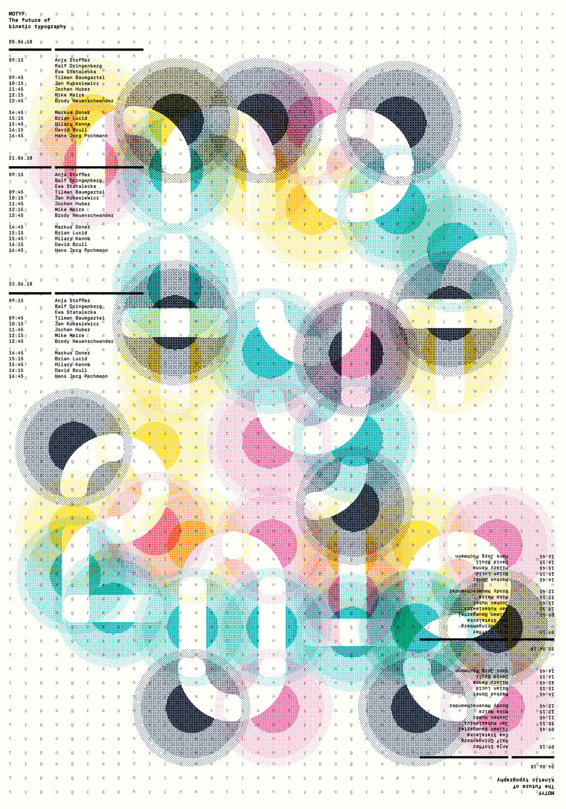

Work
Feed
Profile
Feed
features one off projects
and visual exploration.



Next Project
Kara healthcare
is a speculative design that reimagines how future tech could revolutionise how we interact with healthcare.